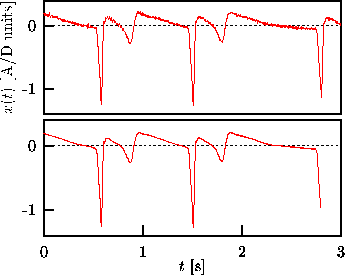

In Ref. [65], a number of modifications of the above procedure have
been discussed which enable the use of nonlinear projective filtering in a data
stream. In this case, only points in the past are available for the formation
of neighborhoods. Therefore the neighbor search strategy has to be modified.
Since the algorithm is described in detail in Ref. [65], we only give
an example of its use here. Figure  shows the result of
nonlinear noise reduction on a magneto-cardiogram (see Figs.
shows the result of
nonlinear noise reduction on a magneto-cardiogram (see Figs.  and
and  ) with the program
noise (no longer part of TISEAN). The same program has also been
used successfully for the extraction of the fetal ECG [66].
) with the program
noise (no longer part of TISEAN). The same program has also been
used successfully for the extraction of the fetal ECG [66].

Figure: Real time nonlinear projective filtering of a magneto-cardiogram time series. The top panel shows the unfiltered data. Bottom: Two iterations were done using projections from m=10 down to q=2 dimensions (delay 0.01 s). Neighborhoods were limited to a radius of 0.1 units (0.05 in the second iteration) and to maximally 200 points. Neighbors were only sought up to 5 s back in time. Thus the first 5 s of data are not filtered optimally and are not shown here. Since the output of each iteration leaps behind its input by one delay window the last 0.2 s cannot be processed given the data in the upper panel.